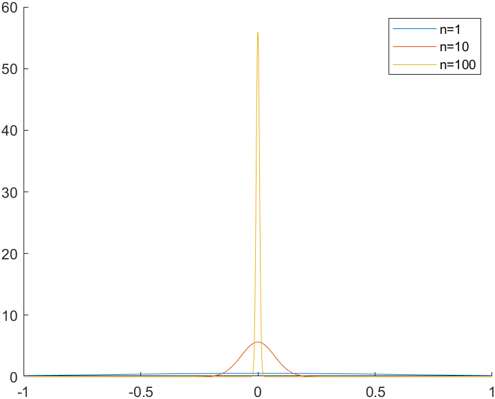
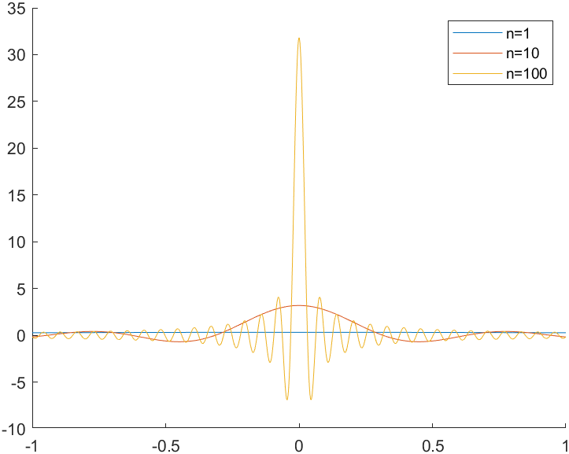
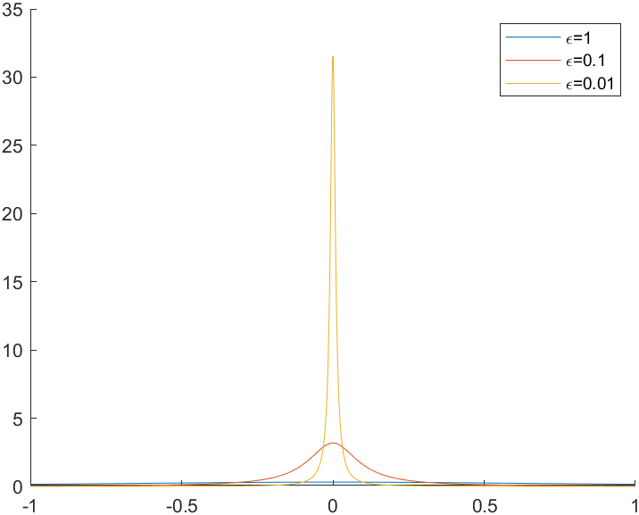

第一部分 · 第 6 份 · 2024.05.31 · 18 页 · 24 Spring · Problem Session 8 · Elements of Field Theory
1场论基础
1.1 坐标变换
1. Einstein求和约定
在求和式中，求和指标即哑指标，其余不被求和的指标称为自由指标. 这些指标具有以下性质：
- 1.
哑指标可以替换为任意其他字母，例如在矩阵乘法中，
(AB)ij=k∑AikBkj=l∑AilBlj.
(1.1) - 1.
若A反对称、S对称，即Aij=−Aji,Sij=Sji，则i,j∑AijSij=0.
Einstein求和约定为：若同一指标在同一单项式中重复出现，则默认对其求和，例如矩阵乘法中，
(AB)ij=k∑AikBkjEinstein求和约定AikBkj. (1.2)2. Kronecker符号与Levi-Civita符号
Kronecker符号定义为
δij={1,i=j,0,i=j,
(1.3)其性质有
δii=3,Aijδjk=Aik,Aijδij=Aii=tr(A).
(1.4)Levi-Civita符号定义为
εijk=⎩⎨⎧+1,(i,j,k)=(1,2,3),(2,3,1) or (3,1,2),−1,(i,j,k)=(1,3,2),(2,1,3) or (3,2,3),0,otherwise. (1.5)其性质有
- 1.
完全反对称：εijk=εjki=εkij=−εikj=−εkji=−εjik.
- 1.
3×3矩阵的行列式：
εijkAilAjmAkn=εijkAliAmjAnk=εlmndet(A).
(1.6) - 1.
εijkεklm=δilδjm−δimδjl（相当重要的公式！）.
3. 右手直角坐标系
- 1.
基矢：x^i (i=1,2,3)，满足
正交：x^i⋅x^j=δij,右手：x^i×x^j=εijkx^k}⟹(xi×x^j)⋅x^k=εijk. (1.7) - 1.
坐标：xi=r⋅x^i.
- 1.
位矢：r=xix^i=(r⋅x^i)x^i.
4. 转动变换
- 1.
新、旧基矢间的关系：
x^i′=(x^i′⋅x^j)x^j=Rijx^j,
(1.8) - 1.
新、旧坐标间的关系：
xi′=r⋅x^i′=(xjx^j)⋅x^i′=Rijxj. (1.9)
若新坐标系亦为右手直角系，则
δij=x^i′⋅x^j′=(Rikx^k)⋅(Rjlx^l)=δklRikRjl=RikRkl=(RRT)ij,
(1.10)εijk=(x^i′×x^j′)⋅x^k′=[(Rilx^l)×(Rjmx^m)]⋅(Rknx^n)
=εlmnRilRjmRkn=εijkdet(R),
(1.11)因此要求旋转矩阵R为一行列式为+1的正交矩阵.
1.2 场的微分
1. 梯度算子
梯度算子（或称Nabla算子）定义为
其同时具有一阶线性微分算子的性质（满足Leibniz法则、链式法则）与矢量算子的性质.
2. 场的一阶导数
标量场φ的梯度定义为
矢量场的梯度、散度、旋度分别定义为
∇A=x^ix^j(∂iAj),∇⋅A=∂iAi,∇×A=x^i(εijk∂jAk). (1.14)特别地，对于三维空间中的位矢r，记其模长r=∣r∣，则有
∇r=rr=Δr^,∇r=I↔,∇⋅r=3,∇×r=0, (1.15)其中I↔为二阶单位张量，在三维空间中可理解为3×3的单位矩阵.
3. Leibniz法则
- 1.
∇(φψ)=ψ∇φ+φ∇ψ.
- 1.
∇(A⋅B)=A⋅∇B+B⋅∇A+A×∇B+B×∇A.
- 1.
∇(φA)=(∇φ)A+φ∇A. ∇⋅(φA)=A⋅∇φ+φ∇⋅A. ∇×(φA)=(∇φ)×A+φ∇×A.
- 1.
∇(A×B)=(∇A)×B−(∇B)×A. ∇⋅(A×B)=(∇×A)⋅B−(∇×B)⋅A. ∇×(A×B)=(∇⋅B+B⋅∇)A−(∇⋅A+A⋅∇)B.
其中第二式非常特殊，不能直接用Leibniz法则理解（否则会漏掉后两项旋度项）.
这里不采用定义严格证明，而是通过Leibniz法则半说明以帮助理解记忆公式.
∇⋅(A×B)=∇A⋅(A×B)+∇B⋅(A×B) 其中∇φ,∇A,∇B分别表示只作用在φ,A,B上的Nabla算子.
4. 链式法则
若标量场φ=φ(f)、矢量场A=A(f)，其中f=f(r)，则
∇φ=φ′∇f,∇A=A′∇f,∇⋅A=A′⋅∇f,∇×A=A′×∇f. (1.18)特别地，
∇f(r)=f′(r)r^,∇×[f(r)r^]=0.
(1.19)5. 场的二阶导数
- 1.
恒等式：
- 1.
Laplace算子：
6. Taylor展开1
- 1.
单变量函数：
φ(x+δ)=n=0∑∞n!φ(n)(x)δn=[n=0∑∞n!1(δdxd)n]φ=exp(δdxd)φ.
(1.22) - 1.
标量场：
φ(r+δ)=exp(δ1∂i)exp(δ2∂2)exp(δ3∂3)φ=exp(δi∂i)φ=exp(δ⋅∇)φ 特别地，原点附近微分中值定理可利用梯度算符简写为
f(r)−f(0,0)=r⋅∇f(θr),θ∈(0,1). (1.24)
1.3 场的积分
1. 梯度积分的基本定理
考虑任一梯度场2∇■在曲线L上的积分，L的起点与终点分别为P,Q，则
例如对于标量场φ与A⋅B，其结果分别为
∫Ldl⋅∇φ=φ(Q)−φ(P),∫Ldl⋅∇(A⋅B)=A⋅BPQ. (1.26)对于向量场A，其结果为
2. 散度积分的基本定理
考虑任一散度场∇⋅■在区域Ω内的积分，则
- 1.
记c为常矢量，分别令■=φc, A×c，可得
∫ΩdV∇φ=∫∂Ωdσφ,∫Ω∇×A=∫∂Ωdσ×A. (1.29)特别地，∫∂Ωdσ=0.
- 1.
Green恒等式.
- (a).
Green第一公式：令■=φ∇ψ，可得
∫ΩdV[φ∇2ψ+∇φ⋅∇ψ]=∫∂Ωdσ⋅φ∇ψ=∫∂Ωdσφ∂n∂ψ. (1.30) - (a).
Green第二公式：令■=φ∇ψ−ψ∇φ，可得
∫ΩdV[φ∇2ψ−ψ∇2φ]=∫∂Ωdσ⋅(φ∇ψ−ψ∇φ)=∫∂Ωdσ(φ∂n∂ψ−ψ∂n∂φ). (1.31)
3. 旋度积分的基本定理
考虑任一旋度场∇×■在曲面Σ上的积分，则
1.4 正交曲线坐标系3
1. 正交曲线坐标系
在空间中一组曲线坐标系(u1,u2,u3)中，空间线元可写为
dr=α=1∑3∂uα∂rduα=α=1∑3(hαduα)uα, (1.33)对比后两个等号的表达式可定义Lame系数h与坐标基矢uα
hα=∂uα∂r,uα=hα1∂uα∂r. (1.34)对于柱坐标，hρ=1, hφ=ρ, hz=1； 对于球坐标，hr=1, hθ=r, hφ=rsinθ.
2. 场的梯度
由于
dφ=∇φ⋅dr=α=1∑3(∇φ)αhαduα=α=1∑3∂uα∂φduα, (1.35)因此
(∇φ)α=hα1∂uα∂φ⟹∇=α=1∑3hαu^α∂uα∂.
(1.36)3. 正交曲线坐标系中的重要矢量公式
正交曲线坐标系中的坐标基矢u^α满足以下关系：
∇uα=hαu^α,∇×hαu^α=0,∇⋅Hhαu^α=0,
(1.37)其中H=h1h2h3. 对于柱坐标系，
∇=ρ^∂ρ∂+φ^ρ1∂φ∂+z^∂z∂.
(1.38)对于球坐标系，
∇=r^∂r∂+θ^r1∂θ∂+φ^rsinθ1∂φ∂.
(1.39)证明
- 1.
由定义可证明∇uα=u^α.
- 1.
利用场的二阶导数的恒等式
∇×∇uα=∇×hαu^α=0.
(1.40) - 1.
记H=h1h2h3，则
∇u1×∇u2=h1u^1×h2u^2=Hh3u^3
=∇×(u1∇u2)−u1(∇×∇u2)=∇×(u1∇u2),
(1.41)因此∇⋅(h3u^3/H)=0，即∇⋅(hαu^α/H)=0.
4. 场的散度
利用式(1.37)与梯度的定义可得
∇⋅A=α=1∑3∇⋅(Aαuα)=α=1∑3∇(hαHAα⋅Hhαu^α)=H1α=1∑3hαu^α⋅∇(hαHAα) =H1α=1∑3hαu^α⋅β=1∑3hβu^β∂uβ∂(hαHAα)=H1α∑∂uα∂(hαHAα),
(1.42)其中已利用坐标基矢正交的条件：u^α⋅u^β=δαβ. 对于柱坐标系，
∇⋅A=ρ1∂ρ∂(ρAρ)+ρ1∂φ∂Aφ+∂z∂Az. (1.43)对于球坐标系，
∇⋅A=r21∂r∂(r2Ar)+rsinθ1∂θ∂(sinθAθ)+r2sinθ1∂φ∂Aφ. (1.44)5. 场的旋度
利用式(1.37)与梯度的定义可得
∇×A=β=1∑3∇×(Aβu^β)=β=1∑3∇(hβAβ)×hβu^β=α,β=1∑3(u^α×u^β)⋅hαhβ1∂uβ∂(hβAβ) =H1α,β,γ=1∑3εαβγhγ∂uα∂(hβAβ)u^γ=H1h1u^1h2u^2h3u^3∂u1∂∂u2∂∂u3∂h1A1h2A2h3A3. (1.45)6. 场的Laplace算子
利用散度的定义式(1.42)可得
∇2φ=∇⋅∇φ=α=1∑3∇⋅(hαu^α∂uα∂φ)=H1α=1∑3∂uα∂(hα2H∂uα∂φ)
(1.46)对于柱坐标系，
∇2ψ=ρ1∂ρ∂(ρ∂ρ∂ψ)+ρ21∂φ2∂2ψ+∂z2∂2ψ
=∂ρ2∂2ψ+ρ1∂ρ∂ψ+ρ21∂φ2∂2ψ+∂z2∂2ψ.
(1.47)对于球坐标系，
∇2ψ=r21∂r∂(r2∂r∂ψ)+r2sinθ1∂r∂(sinθ∂θ∂ψ)+r2sin2θ1∂φ2∂2ψ
=r1∂r2∂2(rψ)+r2sinθ1∂r∂(sinθ∂θ∂ψ)+r2sin2θ1∂φ2∂2ψ.
(1.48)1.5 Dirac-δ函数
1. 一维δ函数
对于行为良好4的函数φ(x)，一维Dirac-δ函数及其n阶导定义为
∫−∞+∞δ(x−a)φ(x)dx=φ(a),∫−∞+∞δ(n)(x−a)φ(x)dx=(−1)nφ(n)(a),
(1.49)其中(−1)n可理解为对于δ函数“偶函数”的性质.
注
实际上，δ函数并非通常意义上的函数，数学上将其称为“分布”，分布F是由其对任意行为良好的函数φ(x)的作用F{φ}定义的. 分布的导数∂xF仍是一个分布，定义为(∂xF){φ}=−F{∂xφ}. 通常的函数f(x)其实也可以视为一个分布F：F{φ}=∫−∞+∞f(x)φ(x)dx.
2. δ函数的基本性质5
- 1.
量纲：[δ(x)]=[x]−1.
- 1.
f(x)δ(x−a)=f(a)δ(x−a).
- 1.
xnδ(x)=0, xδ′(x)=−δ(x).
- 1.
若f(x)只有若干单零点6{xn}，则
δ(f(x))=n∑∣f′(xn)∣δ(x−xn).
(1.50)特别地，δ(ax)=δ(x)/∣x∣，当a=−1时δ(−x)=δ(x)，即δ函数具有类似偶函数的性质.
3. δ函数的形式定义与渐进行为
形式上，δ函数可表述为
∫−∞+∞δ(x−x0)=1, and δ(x−x0)=0 when x=x0.
(1.51)δ函数也可以视为普通函数系的极限，即δ(x)=n→∞limfn(x)或δ(x)=ε→0+limfε(x). 例如分别对函数fn(x)=ne−n2x2/π, fn(x)=sinnx/πx, fε(x)=ε/π(x2+ε2)作图，可以得到如图1所示的图线.



图 1三种函数在极限情况下对δ函数的趋近
4. Heaviside阶跃函数
阶跃函数定义为Θ(x)={1,0,x>0,x<0,其与δ函数的关系为
Θ(x)=∫−∞xδ(ξ)dξ⟹δ(x)=dxdΘ(x).
(1.52)5. 三维δ函数
三维δ函数的定义与一维情形类似：
∫Ωtotalδ(3)(r−a)d3r=φ(a),∫Ωtotal[∂iδ(3)(r−a)]φ(r)d3r=−∂iφ(a), (1.53)其中Ωtotal为全空间，其性质有
- 1.
量纲为L−3.
- 1.
f(r)δ(3)(r−a)=f(a)δ(3)(r−a).
- 1.
xiδ(3)(r−a)=xixjδ(3)(r), xi∂jδ(3)(r)=−δijδ(3)(r).
- 1.
若f(r)仅有一个简单零点a，则δ(3)(f(x))=δ(3)(r−a)/∣det[∂if(a)]∣.
6∗. 平方反比矢量场
最重要的结论是
∫∂Ωdσ⋅r2r^=4π⟹∇⋅r2r^=4πδ(3)(r), (1.54)其中Ω为任一包含原点的区域，由此可导出
∇r2r^=r3I↔−3r^r^+34πδ(3)(r)I↔. (1.55)整合的结论如下：
∇r1=−r2r^,∇2r1=−∇⋅r2r^=−4πδ(3)(r),∇×r2r^=0. (1.56)1.6 Helmholtz定理
若已知矢量场F的散度∇⋅F和旋度∇×F，则矢量场F唯一确定，且可以表示为
F=−∇φ+∇×A=−∇(4π1∫ΩdV′r−r′∇′⋅F′)+∇×(4π1∫ΩdV′r−r′∇′×F′). (1.57)1.7 选做练习
- 1.
证明恒等式
(∇×B)×B=∇⋅(BB−21B2I↔)−(∇⋅B)B. (1.58) - 1.
证明恒等式
r⋅(∇×B)×B=∇⋅[(BB−B2I↔/2)⋅r]+B2/2, (1.59)其中r为位置矢量，∇⋅B=0.
- 1.
设电荷是局域分布的（为什么？），试由
E(r)=4πε01∫dV′R2ρ(r′)R^ where R=r−r′ (1.60)证明：
- 1.
- (a).
已知
验证：φ(r)是均匀静电场E的标量势，而A是均匀静磁场B的矢量势.
- (a).
由E=−∇φ−∂tA和B=∇×A直接计算证明，任意电磁场的电磁势可以取为如下形式：
φ(t,r)=−r⋅∫01E(t,λr)dλ,A=−∫01λr×B(t,λr)dλ. (1.63)
2作业选讲
- 1.
(11.5.2 (3)) 求引力场F=−kmr/r3通过光滑闭曲面Σ外侧的通量，其中质点m在Σ上.
- 1.
(11.5.3) 设区域V是由曲面x2+y2−z2/2=1及平面z=1, z=−1围成的，S为V的全表面外侧. 又设v=(x2+y2+z2)−3/2(xi+yj+zk)，求积分∬Sv⋅dS.
- 1.
(Ch11.5) 设S(t)是平面x+y+z=t被球面x2+y2+z2=1截下的部分，且
F(x,y,z)=1−(x2+y2+z2).
(2.1)求证：当∣t∣⩽3时，有
∬S(t)F(x,y,z)dS=18π(3−t2)2.
(2.2) - 1.
(Ch11.6) 设f(t)在∣t∣⩽a2+b2+c2上连续，证明：
∭x2+y2+z2⩽1f(x2+y2+z2ax+by+cz)dxdydz=32π∫−11f(a2+b2+c2t)dt. (2.3)
3教材习题
- 1.
(Ch11.4) （Poisson公式）设S:x2+y2+z2=1，f(t)是R上的连续函数，求证：
∬Sf(ax+by+cz)dS=2π∫−11f(a2+b2+c2t)dt. (3.1)解
考虑从(x,y,z)到(u,v,w)的线性正交变换，其中a2+b2+c2u=ax+by+cz，那么u2+v2+w2=x2+y2+z2=1. 在Ouvw系中取u为z轴，作球坐标变换可得
LHS=∫0πf(cosθa2+b2+c2)⋅2πsinθdθ =t=cosθ2π∫−11f(a2+b2+c2)dt=RHS. (3.2) - 1.
(Ch11.8) 设f(x,y)在Bˉ(P0,R)上有二阶连续偏导数且满足Laplace方程
∇2f=∂x2∂2f+∂y2∂2f=0.
(3.3)求证：对0⩽r⩽R，有f(P0)=2πr1∫Lf(x,y)ds，其中P0=(x0,y0)，L是以P0为圆心、r为半径的圆.
- 1.
(Ch11.9) 设D是平面上光滑闭曲线L所围成的区域，f(x,y)在Dˉ上有二阶连续偏导数且满足Laplace方程
∇2f=∂x2∂2f+∂y2∂2f=0.
(3.4)求证：若f(x,y)不是常数，则它在Dˉ上的最大值和最小值都只能在L上取到.
证明
采用反证法. 若f(x,y)的最大值M在D内某点P0取到，则由Ch11.8的结论，
M=f(P0)=2πr1∫Lf(P)ds⩽2πr1∫LMds=M,
(3.5)等号成立当且仅当对于∀P∈L，均有f(P)≡M. 由于r可以任意取到，因此在点P0的任意邻域U(P0,ε)内，均有f(P)≡M. 类似地，对∂U(P0,ε)上的任一点P，在其任意邻域U(P,ε′)内也有f(P)≡M. 依此类推，可证明在整个D上均有f(P)≡M，这与f不是常数矛盾，因此假设不成立，f的最大值只能在L上取到. 最小值类似可证.
- 1.
(Ch11.10) 设f(x,y,z)在Bˉ(P0,R)上有二阶连续偏导数且满足
Δf=∂x2∂2f+∂y2∂2f+∂z2∂2f=0.
(3.6)求证：对0⩽r⩽R，有f(P0)=4πr21∬Sf(x,y,z)dS，其中P0=(x0,y0,z0)，S是以P0为球心、r为半径的球面.
证明
记球面上一点P=(x,y,z)，则P0P⟶=Δr=rr^，因此drdf=r^⋅∇f. 记B(r)为以P0为球心、半径为r的球域，那么
∬S∂r^∂fdS=∬Sr^⋅∇fdS=∭B(r)∇f⋅dS=Gauss 定理∬B(r)∇2fdV=0 =∬∂B(r)drdfdS=r2∬∂B(1)drdfdS=r2drd∬∂B(1)fdS,
(3.7)因此
4πf(P0)=∬∂B(1)f(P0)dS=∬∂B(1)f(P)dS=r21∬∂B(r)f(P)dS,
(3.8)整理得f(P0)=4πr21∬Sf(P)dS，结论得证.
4真题集萃
- 1.
(17-18期末T7) 设曲面
S={(x,y,z)∈R3∣x2+y2+z2=1,z>0},
(4.1)它的定向与z轴正向同侧，设
f(x,y)=1+x2+y21+z,g(x,y)=xy+yz+zx.
(4.2)求积分∬S∇f×∇g⋅dS.
解
注意到
∇⋅(∇f×∇g)=∇g⋅(∇×∇f)−∇f⋅(∇×∇g)=0,
(4.3)构造xOy平面上的有向曲面D:x2+y2⩽1，其方向沿+z方向，因此S+D−构成法向向外的闭曲面，其中D−为与D区域相同但方向相反的有向曲面. 由Gauss定理，
∬S+D−∇f×∇g⋅dS=0⟹∬S∇f×∇g⋅dS=∬D∇f×∇g⋅dS. (4.4)由题意，
∇f=(1+x2+y2)2−2(1+z)(xx^+yy^)+1+x2+y2z^,
(4.5)∇g=(y+z)x^+(z+x)y^+(x+y)z^,
(4.6)因此
原式=∬D(1+x2+y2)2(−2x,−2y,1+x2+y2)×(y,x,x+y)⋅z^dxdy
=2∬D(1+x2+y2)2x2−y2dxdy=0,
(4.7)其中最后一步利用了被积函数与积分区域D中x,y的交换对称性.
- 1.
(18-19期末T4) 设
v=r3y2+z2i^−r3xyj^−r3xzk^ (4.8)是定义在R3\{0}上的向量场，其中r=x2+y2+z2.
- (a).
证明：v的旋度∇×v=0.
- (a).
求向量场v的势函数.
解
- (a).
由题意，
v=r3x2+y2+z2x^−r3x(xx^+yy^+zz^)=rx^−r3xr. (4.9)由Leibniz法则，
∇×v=−r2r^×x^−r4rx^−3xr^×r−0=r2x^×r^−r2x^×r^=0. (4.10) - (a).
记势函数为φ(x,y,z)，则
φ(x,y,z)=∫Lv⋅dr=∫Lr2rdx−xdr=∫Ld(rx)=rx+C. (4.11)
- 1.
(18-19期末T5) 设向量场v=−xi^+xyj^+x2+y2+z2−1/4k^，曲面S={x2+y2+z2=1}，它的正向是外法向. 求向量场∇×v在定向曲面S上的积分
解
注意到∇⋅(∇×v)=0，S为闭曲面，由Gauss定理，积分值为零.
- 1.
(19-20期末T10) 设函数f(x,y,z)在区域Ω={(x,y,z):x2+y2+z2⩽1}上具有连续的二阶偏导数，且满足
∂x2∂2f+∂y2∂2f+∂z2∂2f=x2+y2+z2, (4.13)计算
I=∭Ω(x∂x∂f+y∂y∂f+z∂z∂f)dxdydz.
(4.14)解
注意到被积函数是r⋅∇f的形式，而题设条件仅给定∇2f. 若希望两者的导数是同阶的，则将∇2f配成■⋅∇2f，其中∇2f是∇⋅∇f的结果. 而2r是∇r2的结果，因此由Leibniz法则，
∇⋅(r2∇f)=2r⋅∇f+r2∇2f=2r⋅∇f+r3. (4.15)由Gauss定理，
I=21∬r=1r2∇f⋅dS−21∭Ωr3dV =Gauss定理21∭Ω(r−r3)dV=2π∫01(r−r3)r2dr=6π.
(4.16) - 1.
(20-21期末T3 (2)) 设u(x,y)在圆盘D:x2+y2⩽π上有二阶连续偏导数，且
∂x2∂2u+∂y2∂2u=sin(x2+y2),
(4.17)n为边界圆周∂D的单位外法向，计算曲线积分∮∂D∂n∂uds.
解
记∂D上某点P的法向n=(cosθ,sinθ)，则其正向切向
τ=(cos(θ+2π),sin(θ+2π))=−(sinθ,cosθ), (4.18)有向线元ds=τds=(dx,dy)，即
dx=−dssinθ,dy=dscosθ,
(4.19)那么
nds=(cosθ,sinθ)ds=(dy,−dx). (4.20)由Green定理，
∮∂D∂n∂uds=∮∂D∇u⋅nds=∮∂D(−uydx+uxdy) =∬D(uxx+uyy)dxdy=∬Dsin(x2+y2)dxdy
=2π∫0πsinr2⋅rdr=π(−cosr2)0π=2π. (4.21) - 1.
(20-21期末T5) 记v=(y2+z2)i^+(z2+x2)j^+(x2+y2)k^，计算曲线积分
I=∮L(y2+z2)dx+(z2+x2)dy+(x2+y2)dz,
(4.22)其中L是球面x2+y2+z2=4x与柱面x2+y2=2x的交线 (x⩾0)，从z轴的正向看去L沿顺时针方向.
证明
记球面上被L包围的区域为Σ，由Stokes定理，
I=∬S2(y−z,z−x,x−y)⋅2(x−2,y,z)dS=2∬S(z−y)dS=2∬SzdS
=2∬Sz1+zx2+zy2dxdy=4∬x2+y2⩽2xdxdy=4π, (4.23)其中第一行最后一个等号已利用S关于y坐标具有偶对称性的条件.
- 1.
(21-22期末T6) 设常数a,b都是正实数，平面向量场v=(−yi^+xj^)/(a2x2+b2y2).
- (a).
求v在区域D1={(x,y)∈R2∣x>0}的所有势函数.
- (a).
证明v不是区域D2={(x,y)∈R2∣x2+y2>0}上的保守（有势）场.
解
- (a).
对∀D0⊂D1，由于v在D1内无奇点，由Green定理，
∫∂D0v⋅dr=∫∂D0a2x2+b2y2−ydx+xdy=0, (4.24)因此v是保守场. 考虑折线段路径L0:(1,0)→(x,0)→(x,y)，积分得v的势函数
φ(x,y)=φ(1,0)+0+∫0ya2x2+b2v2xdv=φ(1,0)+ab1arctanaxby.
(4.25) - (a).
取正向积分路径L:a2x2+b2y2=1，则
∮Lv⋅dr=∮La2x2+b2y2−ydx+xdy=∮L−ydx+xdy =Green定理2∬Ddxdy=ab2π.
(4.26)而对于D2内任意不包含原点的区域D0，由第(1)问的结果，∮∂D0v⋅dr=0=2π/ab. 因此v不是D2内的保守场.
- 1.
(21-22期末T8) 设函数f(x,y,z)在R3有二阶连续偏导数，并且对任一点P0=(x0,y0,z0)及任意正数r>0有
4πr21∬Sf(x,y,z)dS=f(P0),
(4.27)其中S是以P0为球心、r为半径的球面. 证明：f满足Laplace方程
Δf=∂x2∂2f+∂y2∂2f+∂z2∂2f=0.
(4.28)证明
参考Ch11.10的证明思路. 记球面上一点P=(x,y,z)，则P0P⟶=Δr=rr^，因此drdf=r^⋅∇f. 记B(r)为以P0为球心、半径为r的球域，那么
∬S∂r^∂fdS=∬Sr^⋅∇fdS=∭B(r)∇f⋅dS=Gauss 定理∬B(r)∇2fdV =∬∂B(r)drdfdS=r2∬∂B(1)drdfdS=r2drd∬∂B(1)fdS
=4πr2drd(4πr21∬∂B(r)fdS)=4πr2drdf(P0)=0,
(4.29)整理得
∭B(r)∇2fdV=0,∀r>0.
(4.30)由于∇2f∈C(R3)，因此若f在某点P′非零，不妨设f(P′)>0，则∃ε>0，使得对∀P∈U(P′,ε)⊂B(r)⊂R3，均有∇2f(P)>0，因此
这与以上结论矛盾，故要求对∀P∈R3，均有∇2f(P)=0.
- 1.
(22-23期末T7) 设D是由简单光滑闭曲线L围成的区域，f(x,y)在D上具有连续的偏导数. 记d=(x,y)∈Dmaxx2+y2.
- (a).
证明：
∬Df(x,y)dxdy=∫Lxf(x,y)dy−∬Dx∂x∂fdxdy.
(4.32) - (a).
对于∀(x,y)∈L, f(x,y)=0. 证明：
∬Df2(x,y)dσ⩽d2∬D[(∂x∂f)2+(∂y∂f)2]dσ.
(4.33)
证明
- (a).
由Green定理，
∫Lxfdy=∬D[f+xfx]dxdy⟹∬Dfdxdy=∫Lxfdy−∬Dxfxdxdy.
(4.34) - (a).
分别取(P,Q)=(0,xf2)和(−yf2,0)，由Green定理，
∬Df2dσ=∫Lxf2dy−∬D2xffxdσ,
(4.35)∬Df2dσ=∫L−yf2dx−∬D2yffydσ.
(4.36)利用L上f≡0的条件可得
∬Df2dσ=−∬D(xfx+yfy)fdσ⩽∬D(∣xfx∣+∣yfy∣)∣f∣dσ
⩽∬Dx2+y2fx2+fy2∣f∣dσ ⩽[∬D(x2+y2)(fx2+fy2)dσ⋅∬Df2dσ]1/2,
(4.37)其中后两个不等号均利用了Cahchy-Schwarz不等式，整理得
∬Df2dσ⩽∬D(x2+y2)(fx2+fy2)dσ⩽d2∬D(fx2+fy2)dσ.
(4.38)